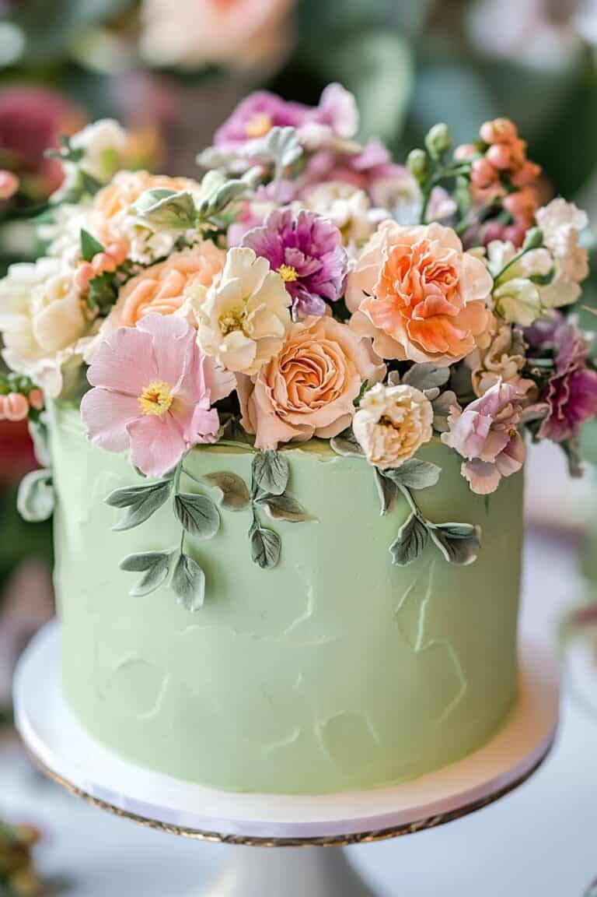
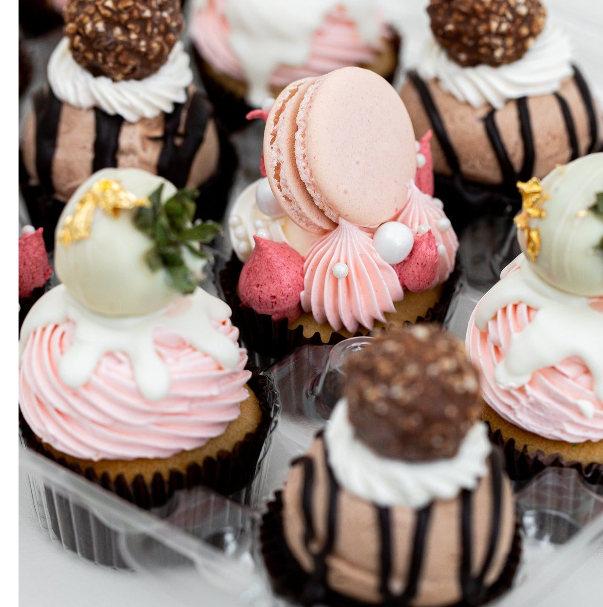
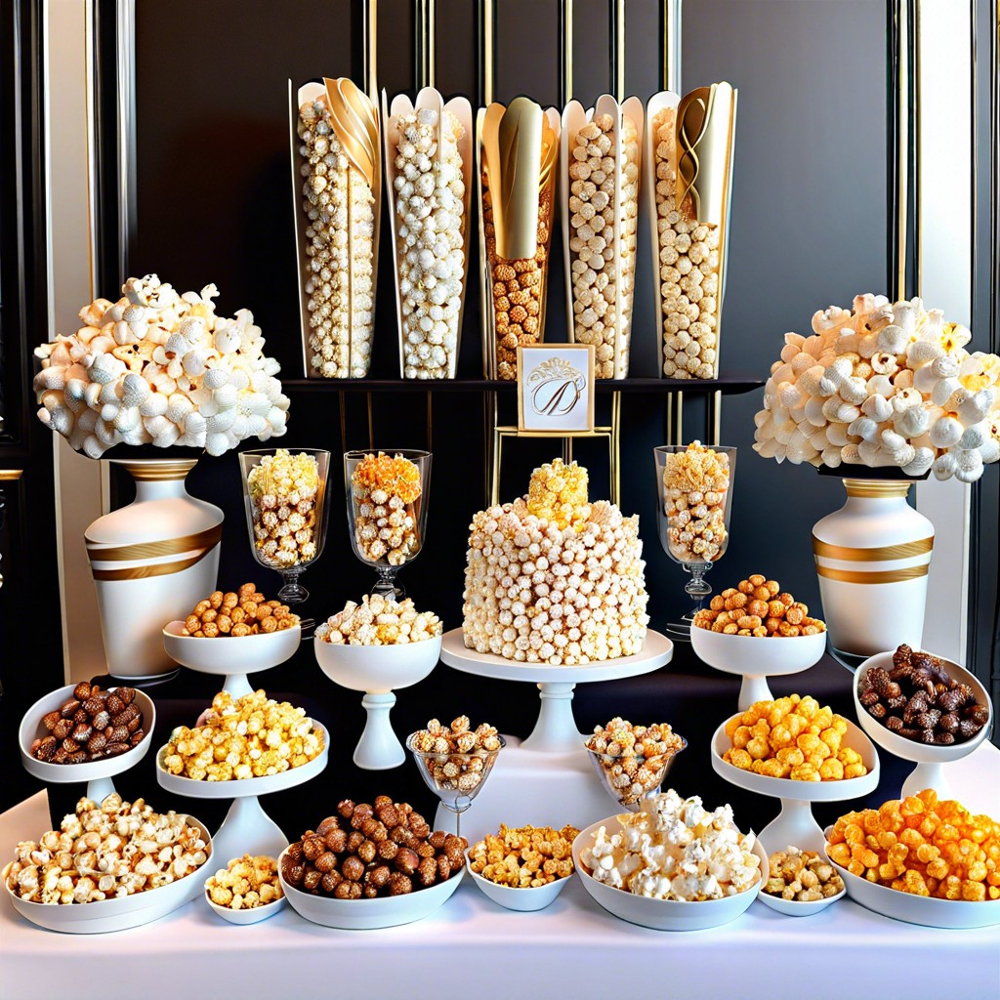

The Sweet Side

Cakes

Cupcakes

Cookies

Custom desserts & dessert catering
Explore Sweet Side View MenuFrom elegant cakes to custom desserts, every order is crafted with intention, flavor, and detail to make your moments unforgettable.



Orlando & Central Florida
689-237-5744
twosassyspoons@yahoo.com
Call Now